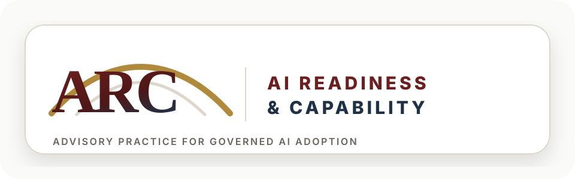

ARC is the consulting layer built on the published research. Five service lines that take governments, universities, and organizations from where they currently stand on AI to where they need to be: clear-eyed about adoption, equipped to manage it, and capable of using it well.
The frameworks are public. The advisory work applies them to your context, with the depth and judgment that a generic consulting framework cannot provide.
A diagnostic that shows where your organization, sector, or country actually stands on AI. Built on the live AI Matrix Live framework that tracks 115 countries.
A management system for AI, so your organization can adopt it without losing control of risk, accountability, or direction.
A practical method for getting real productivity gains out of AI, by training people to design structured workflows with it.
A risk-based framework for higher education to rebuild the credibility of assessment under AI conditions. Live audit tool included.
Sector-specific or country-specific foresight engagements using the live Grey Swan framework, on commission. Retainer access available.
The five lines map to the natural sequence of a serious AI engagement. Mapping comes first: a clear view of where you stand on access and agency, what is working, what is not, and where the real risks sit. Implementation puts a management system in place so AI can be adopted without losing control. Augmentation trains the people who actually do the work to use AI in structured ways that produce measurable gains. Education applies the same logic to assessment and curriculum where students and graduates are concerned. Foresight reads the medium-term signals so strategic decisions are grounded in evidence rather than instinct.
You do not have to commission all five. A typical engagement starts with one. The point of the architecture is that each line is built to stand alone, but they fit together into a coherent operating picture for clients who want it.
Government ministries running national AI strategies. Universities and higher education institutions. Companies and corporate groups beginning serious AI adoption. Development organizations funding AI capacity work. Sovereign wealth funds and long-horizon investors. Any organization that needs to move on AI seriously and does not want to do it badly.
The work is grounded in published research, but it is delivered as practical advisory engagements with defined scopes and concrete outputs.
For commissioned work, partnerships, or speaking on any of the five service lines.
ewan@ewansimpson.org